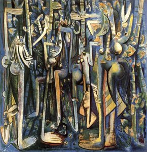

The Jungle
Wifredo Lam · 1943 · Gouache on paper · Museum of Modern Art, New York
In copyright. Look and learn: shown for study, not for download.
Lam began The Jungle in 1943, when he was forty, and later that year it was shown in an exhibition at the Pierre Matisse Gallery in New York, where it created controversy. It is painted in gouache on paper. The Museum of Modern Art in New York ultimately purchased it.